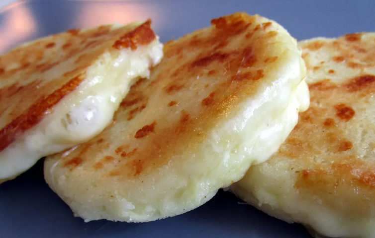

Colombian Arepas

Arepa is a typical Colombian dish that we usually serve for breakfast, spread with butter on top and with a cup of Colombian hot chocolate.
To make arepas you use precooked corn meal like Harina P.A.N. or Goya many supermarkets have it in the international food aisle. You can also find it in Latino markets or Amazon.
Ingredients
- 1 cup pre-cooked white or yellow arepa flour or cornmeal
- 1 cup warm water
- 1/3 cup white or mozzarella cheese grated
- 2 tbsp butter
- Pinch of salt
Instructions
- Combine the cornmeal, warm water, cheese, 1 tbsp butter and salt, mixing thoroughly. Let mixture stand for five minutes.
- Knead with your hands for about 3 minutes moistening your hands with water as you work.
- Form 4 small balls with the dough. Place each ball between 2 plastic bags and with a flat pot cover flatten to 1/2 inch.
- Add the butter to a nonstick pan over medium heat. Place the arepas in the pan, and cook about 3 minutes on each side, until a crust forms or they are golden brown.